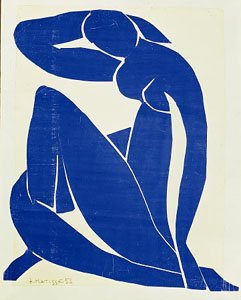

Blue Nude II
Henri Matisse · 1952 · Gouache-painted paper cut-outs stuck to paper mounted on canvas · 116.2 × 88.9 cm · Centre Pompidou, Musée National d'Art Moderne, Paris
In copyright. Look and learn: shown for study, not for download.
After surgery for stomach cancer limited what Matisse could do, he made pictures by painting sheets of paper with gouache and cutting them by hand. The first of the four Blue Nudes took a notebook of studies and two weeks of cutting and arranging before he was satisfied; this is the second, finished in 1952. He had painted his last canvas in 1951, and from then until his death in 1954 cut paper was his only medium. He was eighty-two.